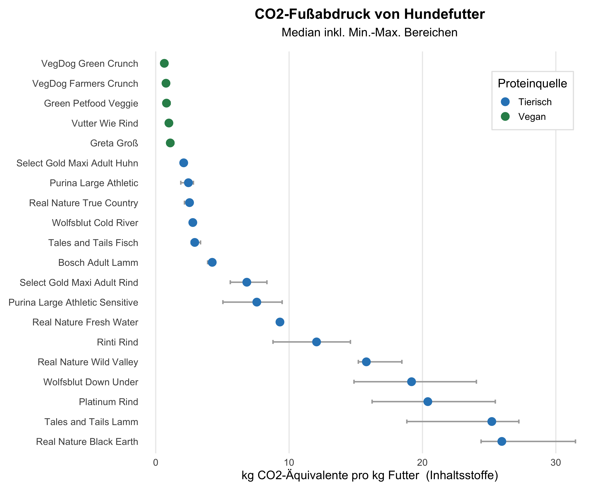
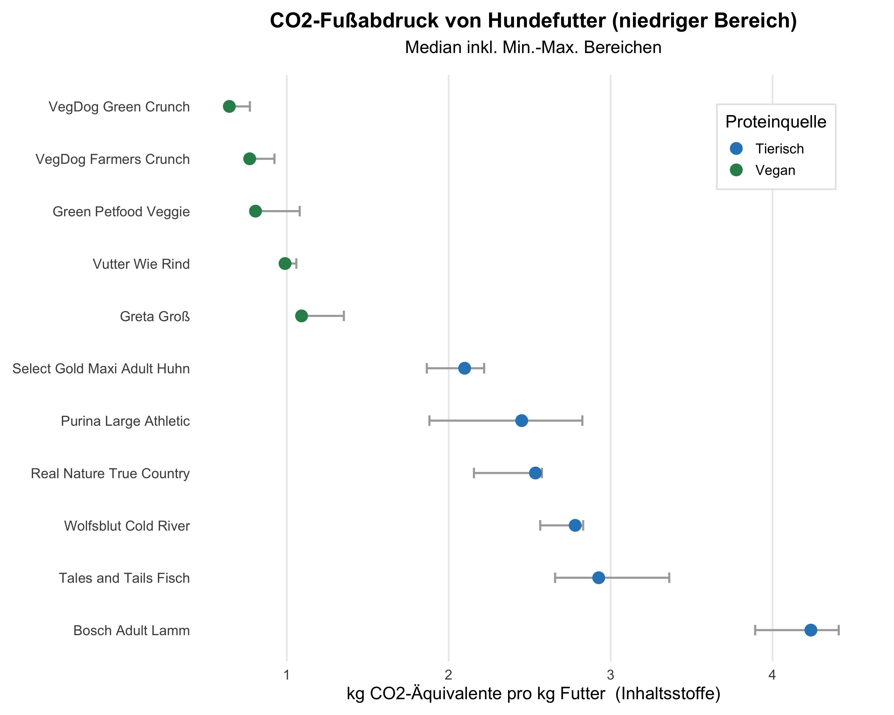

Auf dieser Seite werden verschiedene Hundefutter anhand der CO2-Bilanz ihrer Inhaltsstoffe verglichen.
Die Berechnungen dafür basieren auf life cycle analyses (LCA) von Lebensmitteln, die in der Datenbank von
AGROBALYSE öffentlich zugänglich sind.
LCA messen den gesamten ökologischen Fußabdruck von Lebensmitteln, vom Feld bis zum Konsumenten, mit Berücksichtigung von Emissionen,
Landnutzung, Wasserverbrauch und Abfall. Die hier gezeigten Ergebnisse beschränken sich bislang auf die Emissionen, gemessen als CO2-Äuivalente,
was CO2 und andere Treibhausgase berücksichtigt.
Die nachfolgende Grafik gibt einen Überblick über verschiedene Trockenfutter für erwachsene Hunde. Blaue Punkte zeigen Futter, die tierisches Protein verwenden, grüne nutzen ausschließlich pflanzliche Proteine (vegan).

Nachstehend ein Zoom in den Bereich mit Emissionen unter 5 kg CO2/kg Futter. Auch hier wird deutlich, dass vegane Produkte eindeutig niedrigere Emissionen mit sich bringen.

Hinweise zur Berechnungsmethode
LCA Datenquelle
Zur Berechnung der Emissionen, die ein Futtermittel mitbringt, wurden die CO2-Äq. Werte der von den Herstellern angegebenen Inhaltsstoffe für die Etappen Landwirtschaft und Transformation in der AGRIBALYSE Datenbank ermittelt und summiert.
Wieso ausschließlich diese beiden Etappen der Lebensmittelverarbeitung? Da es nicht öffentlich ersichtlich ist, woher die Hersteller von Hundefutter ihre primären Produkte beziehen,
sind Rückschlüsse über den Transport und Verpackung der Zutaten nicht möglich. Ebenso ist die genaue Weiterverarbeitung der Zutaten durch die Hersteller nicht bekannt, wodurch die Emissionen, die durch
die Produktion des finalen Trockenfutters entstehen, nicht berücksichtigt sind. Dies betrifft jedoch alle Trockenfutter, die hier verglichen werden.
Verglichen werden also schlussendlichen die Emissionen, die lediglich durch die Zutaten selbst entstehen.
Und da ist die Hauptproteinquelle meist die ausschlaggebende Komponente. Ob das Futter 30% Rindfleisch oder 30% Soja enthält, macht einen riesigen Unterschied für die CO2-Bilanz.